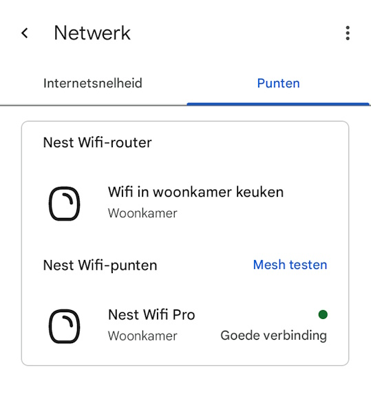
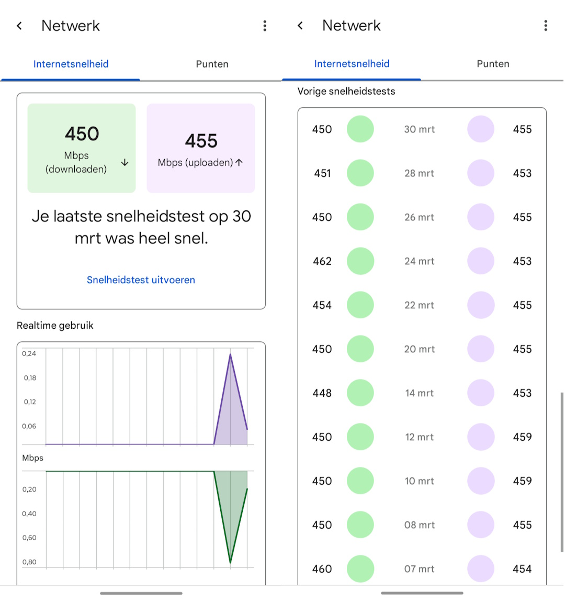
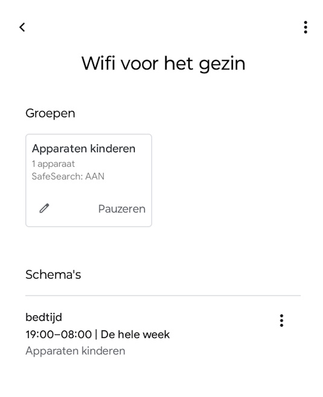

De Nest Wifi Pro is een mesh wifi systeem voor mensen die vooral willen dat wifi gewoon goed werkt. Geen overdaad aan technische menu’s, maar een nette app, snelle installatie en een stabiel netwerk in huis.
In deze review kijk ik niet alleen naar de specificaties, maar vooral naar hoe het systeem zich thuis gedraagt. Met twee units in huis, eentje boven en eentje beneden, blijkt vooral de combinatie van snelheid, dekking en gezinsfuncties erg sterk.
Eindoordeel
Een sterk mesh wifi systeem voor huishoudens die snelheid, eenvoud en gezinsbeheer belangrijk vinden.
Bekijk actuele prijs en beschikbaarheid
Dit zijn passende links bij het product uit deze review.
Wat is het?
De Nest Wifi Pro is een mesh wifi systeem met ondersteuning voor Wi-Fi 6E. Het is bedoeld om snelle en betrouwbare wifi te leveren in huis, met de mogelijkheid om meerdere punten toe te voegen voor extra dekking.
- Mesh-opzet → je gebruikt één router of meerdere punten om wifi beter over je woning te verdelen
- Google Home-beheer → installatie en netwerkbeheer lopen via de Google Home app
Volgens de productspecificaties is één router geschikt voor dekking tot circa 120 m² en zijn functies als Matter, Thread en WPA3 aanwezig. Daardoor is het systeem niet alleen modern, maar ook logisch voor huishoudens die al in het Google-ecosysteem zitten.
Eerste indruk en gebruikservaring
De eerste indruk is vooral rustig en verzorgd. De units zien er netjes uit, vallen niet onnodig op en voelen meer als woonaccessoire dan als klassiek netwerkapparaat. Dat klinkt misschien bijzaak, maar in een woonkamer of overloop is het wel degelijk prettig.
In gebruik is vooral de eenvoud een pluspunt. De app laat duidelijk zien welk punt online is en of de mesh-verbinding goed is. In mijn situatie met twee stuks, één boven en één beneden, levert dat snel draadloos internet op en een stabiel gevoel in huis. Ook het testen van het mesh-netwerk is laagdrempelig, wat helpt als je de beste plaatsing zoekt.

Pluspunten
- Snelle en stabiele wifi in de praktijk
- Eenvoudige mesh-uitbreiding met meerdere punten
- Zeer overzichtelijke bediening via de Google Home app
- Handige gezinsfuncties zoals groepen, SafeSearch en internetschema’s
Minpunten
- Minder geschikt voor mensen die heel veel handmatige netwerkcontrole willen
- Veel van de kracht zit in het Google-ecosysteem en de bijbehorende app
- Voor kleine woningen kan het meer zijn dan je nodig hebt
- De meerwaarde zit vooral in eenvoud en gebruiksgemak, niet in een overload aan expertinstellingen
Integratie en compatibiliteit
De Nest Wifi Pro draait om beheer via Google Home. Dat betekent dat installatie, netwerkcontrole, snelheidstests en gezinsinstellingen allemaal vanuit één vertrouwde app te doen zijn. Daarnaast ondersteunt het systeem moderne standaarden zoals Matter en Thread, wat het ook in smart-home omgevingen interessant maakt.
- Beheer via de Google Home app
- Ondersteuning voor Matter en Thread
- Beveiliging met WPA3 en beveiligd opstarten

Voor wie is dit een goede keuze?
De Nest Wifi Pro is vooral een goede keuze voor gezinnen en huishoudens die goede wifi willen zonder dat het netwerkbeheer een hobby hoeft te worden. Heb je meerdere verdiepingen, werk je veel draadloos of wil je simpel kunnen zien of alles goed verbonden is, dan past dit systeem erg goed.
Ook voor ouders is dit een opvallend handig systeem. Je kunt apparaten groeperen, SafeSearch inschakelen en een vast internetschema instellen. Denk aan een groep voor de apparaten van je kinderen, met bijvoorbeeld automatisch geen internet meer na 19:00 uur. Dat soort functies zijn niet revolutionair, maar wel precies het soort praktische gemak waar je in het dagelijks leven echt iets aan hebt.
Voor wie juist niet?
Ben je iemand die diep in routerinstellingen wil duiken en elk detail handmatig wil tweaken, dan voelt de Nest Wifi Pro waarschijnlijk te gesloten. Dit systeem is gemaakt voor mensen die eenvoud waarderen, niet voor netwerkfanaten die alles zelf willen fine-tunen.
Aandachtspunten
- Plaats de punten slim, want de kwaliteit van je mesh-netwerk hangt sterk af van de locatie in huis
- De uiteindelijke snelheid blijft mede afhankelijk van je internetprovider en woningindeling
- De gezinsfuncties zijn sterk, maar vooral interessant als je daar thuis ook echt gebruik van wilt maken

Conclusie
De Nest Wifi Pro is geen product dat indruk probeert te maken met een overvloed aan opties. Juist dat is de kracht. Het systeem is snel, rustig vormgegeven en in het dagelijks gebruik bijzonder toegankelijk. Met twee punten in huis is het eenvoudig om boven en beneden goed bereik te houden, terwijl de app helder laat zien hoe het netwerk ervoor staat.
Vooral de gezinsfuncties geven dit systeem extra praktische waarde. Een groep voor kinderdevices maken en daar een vast schema aan koppelen, zoals geen internet meer na 19:00 uur, is precies het soort functie dat laat zien dat slimme wifi meer kan zijn dan alleen snelheid. Zoek je een mesh wifi systeem dat goed presteert en tegelijk prettig leeft in een gezinssituatie, dan is de Nest Wifi Pro een erg sterke keuze.